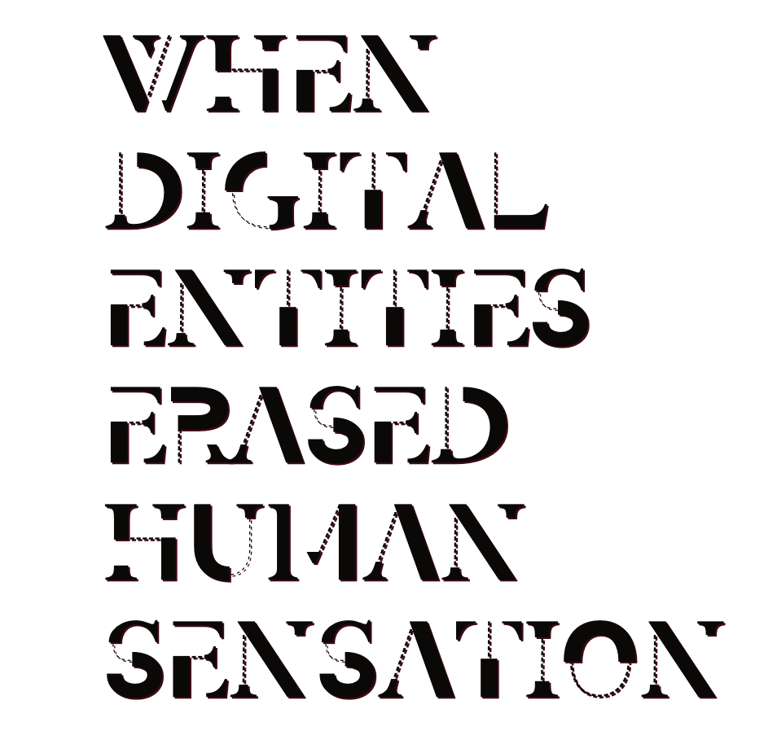

Step into a realm where lines between reality and imagination blur. In a world where digital entities triumphed, human consciousness faded into obscurity. Welcome to a digital dominion, where the boundaries of existence are redefined, and the future unfolds in electrifying pixels.
"When and where did information get constructed as a disembodied medium? How were researchers convinced that humans and machines are brothers under the skin?"
--- N. Kathaering Hayles
Could you imagine a future
In which
everything is
programmed
surveillanced
commodified
If we do not want to go in to a situation like that, what should we do collectively as citizens?

- How can we ensure that AI and digital technologies serve human interests rather than dominating them?
- What ethical guidelines should govern the development and use of digital entities to protect human autonomy?
- Are there safeguards in place to prevent the erosion of privacy and personal data in the face of digital advancements?
- How can we promote digital literacy and critical thinking to empower individuals in the digital age?
- Are there strategies to maintain a balance between the benefits of digitalization and the preservation of human consciousness and culture?
- How can we foster a sense of digital responsibility among individuals, institutions, and governments to avoid unchecked digital dominion?